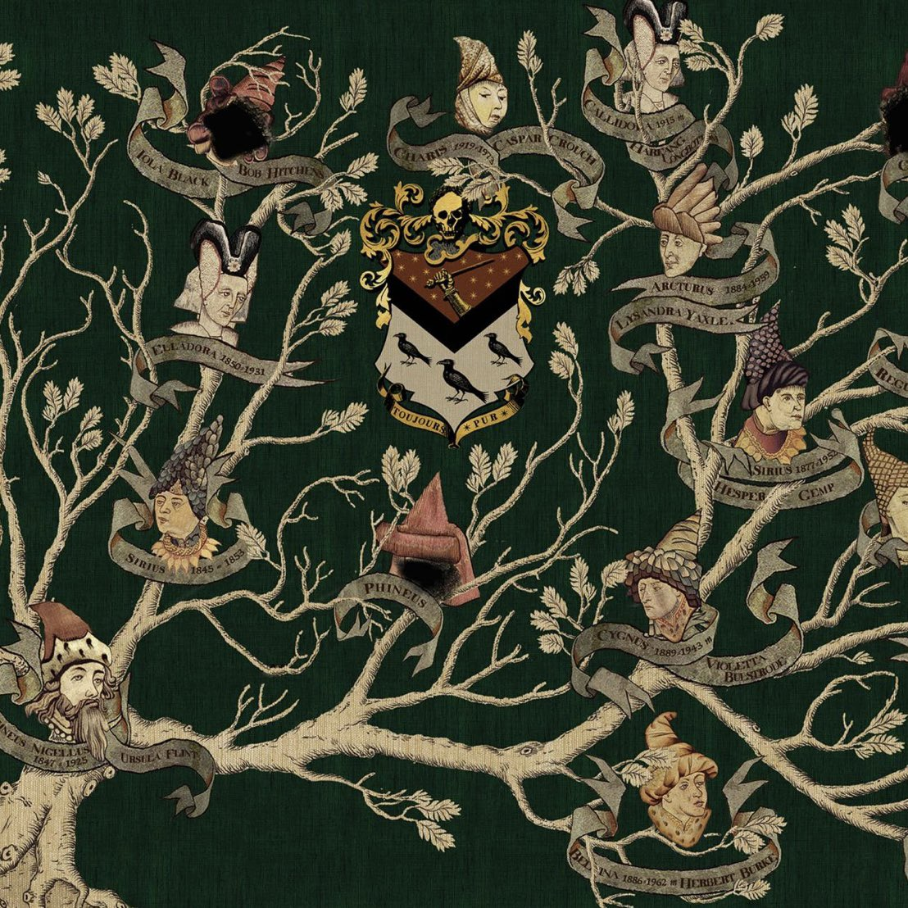

- Walburga Black
- Orion Black
- Sirius Black
- Regulus Arcturus Black
- Druella Black
- Cygnus Black
- Bellatrix Black
- Andromeda Black
- Narcissa Black
The Noble and Most Ancient House of BLACK

The Noble and Most Ancient House of Black was one of the largest, oldest, and wealthiest pure-blooded wizarding families in Great Britain, and one of the Sacred Twenty-Eight. Many wizarding families in Britain were distantly related to the House of Black. Like the Malfoy and Lestrange families (both of whom are related to the Black family), the House of Black was synonymous with elevated status and wealth. The Blacks were traditionally sorted into Slytherin at Hogwarts School of Witchcraft and Wizardry.
The Black family tree was displayed in the drawing room of the family home at 12 Grimmauld Place in London, England on an intricate tapestry, as an ornate mural. The tapestry started in the Middle Ages and showed the dominant line of the family up to the death of its last members.
By the late twentieth century, the House of Black had become extinct in the male line with the deaths of Sirius and Regulus Black, neither of whom had children. The female line continued through the Malfoy, Potter and Weasley families, Teddy Lupin, and through Delphini who was Bellatrix's illegitimate daughter with Lord Voldemort.